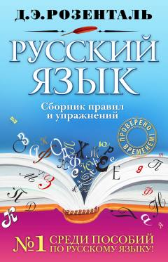

РЯRus tili grammatikasi va imlo qoidalari bo'yicha nazariy va amaliy qo'llanma.
Ushbu o'quv qo'llanma rus tili grammatikasi, imlo va punktuatsiya qoidalarini o'rganish hamda mashqlar orqali mustahkamlash uchun mo'ljallangan. Kitob abituriyentlar va o'qituvchilar uchun savodxonlikni oshirishda hamda imtihonlarga tayyorlanishda muhim manba bo'lib xizmat qiladi.